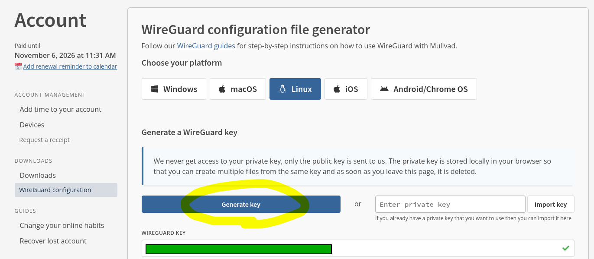
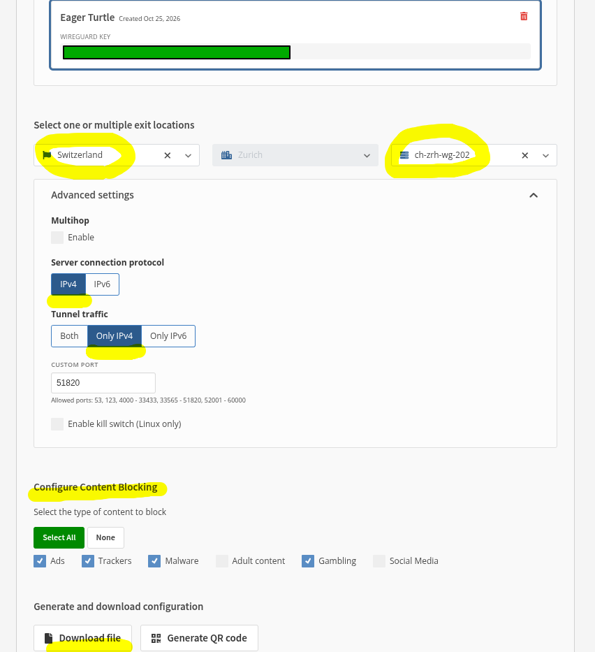
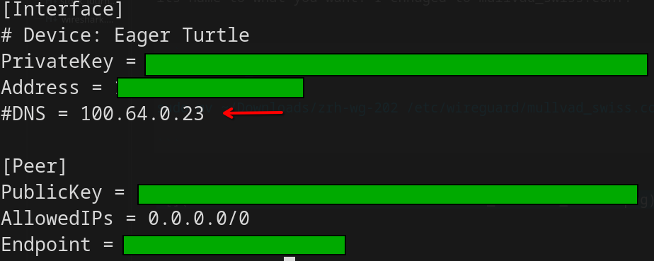
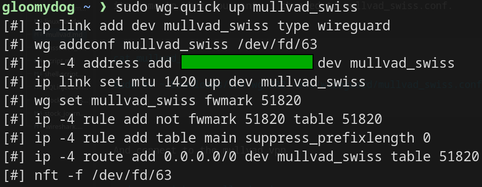
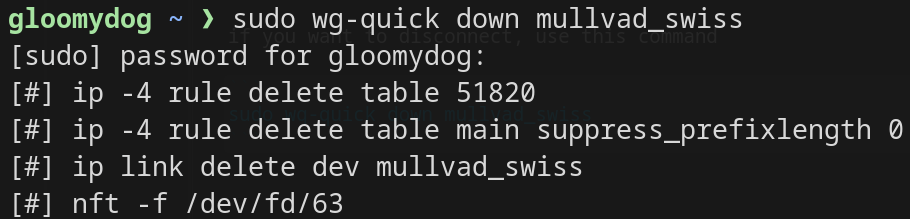

Setting Up Mullvad VPN on Linux with WireGuard
This tutorial explains how to activate Mullvad VPN on Linux using WireGuard instead of the official app.
Generate a WireGuard configuration
- Visit the official Mullvad website, go to your account, and find Downloads > WireGuard configuration.
- Select your OS (Linux, of course) and click Generate key.
- Scroll down and select a location and a server. Some countries offer multiple servers. Here, I selected Switzerland and
ch-zrh-wg-202. - Choose your connection protocol and content-blocking options, then download the file to your PC.
If you prefer, you can install the Mullvad app on Linux instead. In this tutorial, I use WireGuard directly rather than the app.


Edit the DNS setting (optional)
I use AdGuard Home as my DNS server, so I had to edit the configuration file. The file contains a default DNS entry, which I commented out to disable it, because it conflicted with my AdGuard DNS settings.

If you are not using your own DNS, skip this step.
Install the configuration file
Move the downloaded file to the WireGuard directory and rename it as you like. I renamed mine to mullvad_swiss.conf.
sudo mv ~/Downloads/ch-zrh-wg-202.conf /etc/wireguard/mullvad_swiss.confYou can check the contents with:
sudo cat /etc/wireguard/mullvad_swiss.confConnect to Mullvad VPN
sudo wg-quick up mullvad_swiss
Disconnect
To disconnect, run:
sudo wg-quick down mullvad_swiss